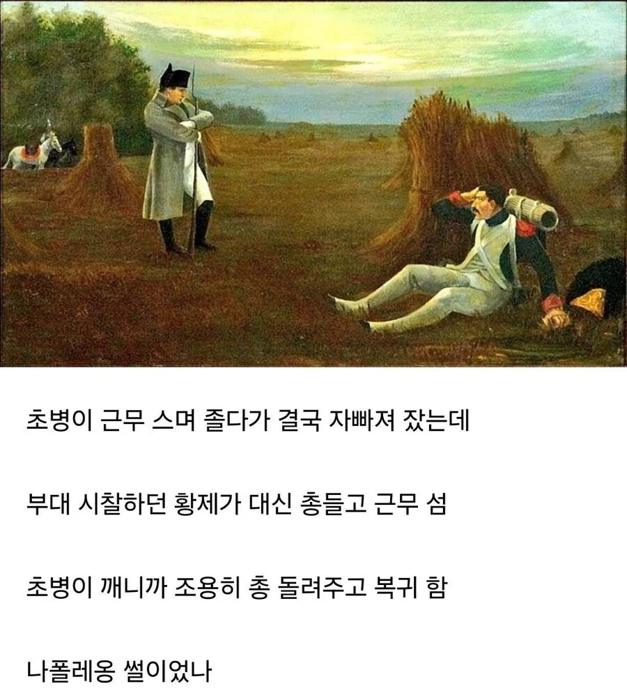

척탄병은 정예병이잖앜ㅋㅋㅋㅋ
그럼 아방가르드
왜 정예병이냐면 그시절 수류탄이 지 혼자 터지거나 불발이 많았고 수류탄을 어떻게 던지냐면 뭐 참호를 파고 다가가서 던진다 이런 개념이 아니라 그냥 적 대열에 달려가서 던졌음
총알 다 뚫고 불안정한 폭발물을 들고 가서 적 대열을 무너뜨리는 역할이라 사망률 높고 군기 빡세고 미친놈들만 모임
황제께서 옆에두고 보시겠다는데 토를달아?
자네가 탄일쎄
착하다!
와씨 소름끼쳤다
병사한텐 저게 마지막 잠일수도 있으니 대신 근무를 해준거구나 퓨ㅠㅠ
일어나면 총살이닌깐 마지막 꿀잠 ㅠㅠ
바로 혼절 가능
혁명의 나라라 잠 못자게하면 폭동될까비
저때 프랑스 육군은 그래도 다른 나라보다 유도리 있었다던데
황제가 보초 설 정도면 유도리 있는 거 맞지
대육군은 60만명 유지했었음
괜히 나폴레옹이 당시 프랑스 군인들에게 사랑받았던게 아님.
내가 초병이었으면 '저사람이 왜 여기있지?' 하다가 아 꿈이네 하고 다시 잘듯
당직근무 스다가 깜빡 졸았는데, 정신 차려보니 눈 앞에서 대통령+참모진들이 잘잤냐며 인수인계하고 떠난수준 아니냐 ㅋㅋㅋ
히잌...
탄약고 근무중인데 대장이 옆에서있음 ㅋㅋㅋ
사단장아. 요즘 병사들이 많이 피곤한가봐?
??? : ㅋㅋ 요즘 꿈 리얼하네
솔직히 저런걸 잘하니까 나폴레옹이 황제 하는거임. 뽕차잖아.
언제부터 근무는 스는 게 됐지
걍 저렇게 끝나서 병사들이 나폴레옹 위해서 목숨바친거 아니냐 ㅋㅋ
잠깨고 조금 정신차리고 나면 눈물 펑펑 날정도로 감동 받겠지
나폴레옹이 무심코 저놈 부대 지휘관에게 한마디 해도 처잔게 내리갈굼이 이어져 발각되는거 아님? ㅋㅋㅋ
어렸을 땐 세종대왕이 잠든 신숙주에게 곤룡포 덮어주고 간 야화가 미담인줄로만 알았었지....
자네는 오늘부터 척탄병일세